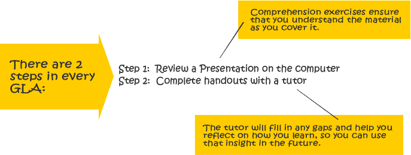
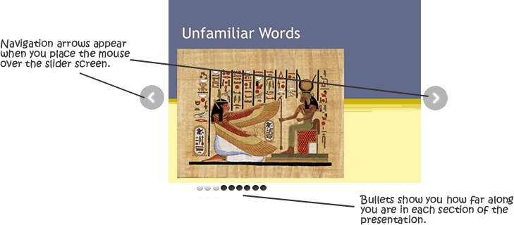

The activity you are about to start requires you to read or view some content and answer comprehension questions along the way. The content is divided into sections, separated by comprehension exercises. You must answer the comprehension questions correctly to proceed from one section to the next. At the end of the activity, you will be asked to complete the handouts and review your work with a tutor.

You will use a slide viewer to move through the presentation. The forward and back controls are on the right and left of the image screen. They are hidden from view until you put your mouse over the screen.

Please ask a tutor if you have any questions on how to work with the GLA. When you are ready click here to start reviewing the presentation.